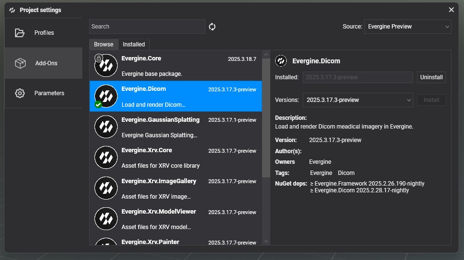
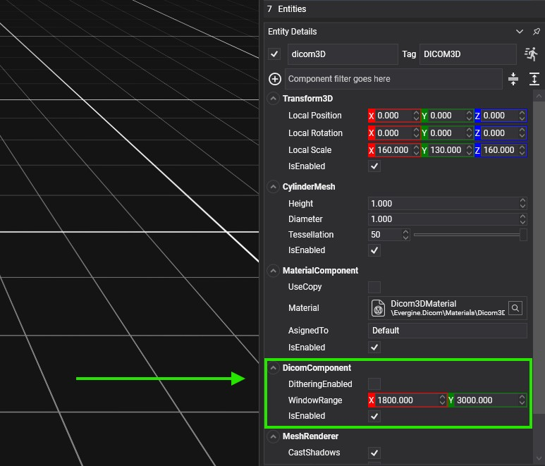
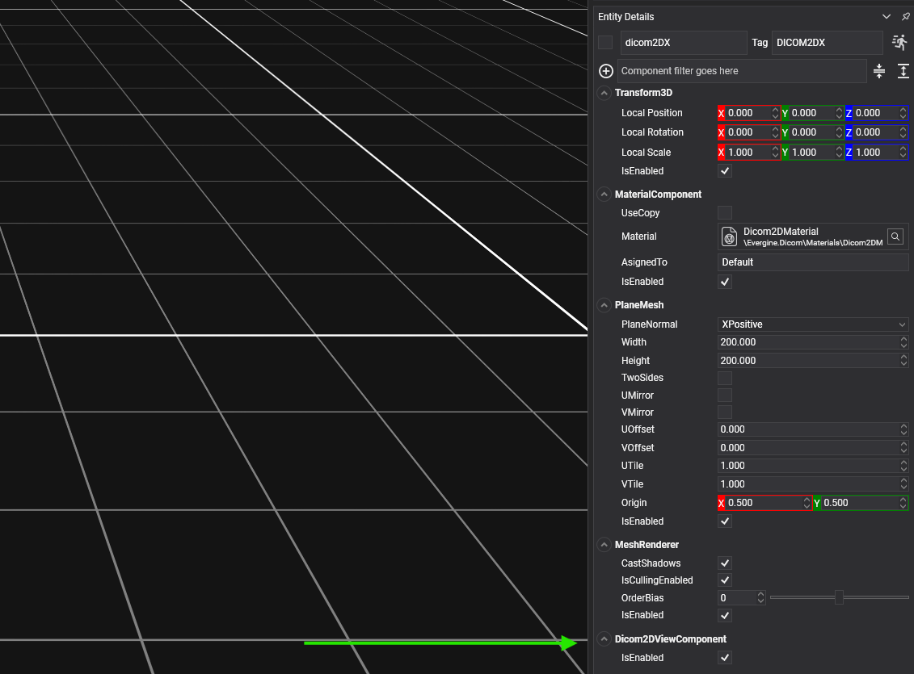

Getting Started
Demo
We highly recommend checking out the DICOM-Demo. It's very simple and it illustrates the basic usage of the addon.

Project Setup
1. Add the Evergine.Dicom Add-on
Open Evergine Studio and add the Evergine.Dicom add-on to your project. Refer to this guide for instructions on adding add-ons.

2. Add the Dicom.CustomRenderPath
The rendering of DICOM in 3D is complex; therefore, it needs a custom RenderPath.
We provide the Dicom.CustomRenderPath that you can set up in two different ways:
- Set the RenderPath in the specific
Camerathat you want. - In the
RenderPipeline, remove theDefaultRenderPathand add theDicom.CustomRenderPath.
// 1) In the specific Camera
var cameraComponent = cameraEntity.FindComponent<Camera>(isExactType: false);
cameraComponent.RenderPath = new Dicom.CustomRenderPath((RenderManager)this.Managers.RenderManager);
// 2) Globally, in the RenderPipeline
// You could do this in the CreateScene of your Scene
var renderPipeline = this.Managers.RenderManager.RenderPipeline;
renderPipeline.RemoveRenderPath(renderPipeline.DefaultRenderPath);
renderPipeline.AddRenderPath(new CustomRenderPath((RenderManager)this.Managers.RenderManager));
// We also provide two helper functions to make this easier:
// - DicomHelpers.ReplaceDefaultRenderPathWithDicomRenderPath
// - DicomHelpers.ReplaceDicomRenderPathWithDefaultRenderPath
DicomComponent
The DicomComponent is essential for both loading and rendering Dicom files.
To load a Dicom file, call the DicomComponent.LoadFromFile method. The DicomComponent acts as a holder for a Dicom file.
The parameter of DicomComponent.LoadFromFile is a string with the path to a .zip file. Our loader will scan for DCM files inside the .zip. You can have any folder hierarchy inside the ZIP, and the files can have any extension (no need for the .dcm extension), but all the files inside the zip must be valid DCMs.
| Property | Description |
|---|---|
| WindowRange | The DicomComponent has the WindowRange property for configuring the density window range. This allows users to control what density range they want to visualize. |
| Dithering | Dithering is a visualization technique that reduces the banding of the 3D visualization. The DicomComponent has the DitheringEnabled property to enable this feature. |
3D Visualization
To visualize Dicoms in 3D, you need:
- Add the Dicom.CustomRenderPath
- Create an entity with these components:
- Transform3D: which will be the transform of our Dicom model
- DicomComponent
- Some MeshComponent for the geometry that contains the Dicom. Important: the vertices' bounding box must be {{-0.5, -0.5, -0.5}}.
- MeshRenderer
- MaterialComponent: using the Dicom3DMaterial

What MeshComponent should I use?
The easiest shape you could use is a simple cube of length 1, centered at (0, 0, 0).
However, if you have knowledge about the way the Dicom was captured, you could use a shape that approximates better the shape of the underlying pixels. For example, most CT scanners are cylindrical and, thus, the scanned pixels are also distributed inside a cylinder. Using a MeshComponent that has a better approximation of the Dicom pixels' shape can help improve rendering performance.
2D Visualization
For the visualization of 2D cuts of the Dicom, we need another entity for each cut. The cut planes must be axis-aligned.
Each cut plane must have its own entity with the following components:
- Transform3D: the position of the plane
- PlaneMesh: with an axis-aligned
PlaneNormaland a largeWidthandHeight(one million, for example) - MeshRenderer
- Dicom2DViewComponent: You must set the
Dicomproperty to reference theDicomComponentcreated in the aforementioned entity. - MaterialComponent: using the Dicom2DMaterial

If your Dicom application only uses 2D visualization (no 3D), when you create the entity that contains the DicomComponent, you don't need most of the components: just the Transform3D and the DicomComponent. Also, if your Dicom application only requires 2D visualization, you don't need to add the Dicom.CustomRenderPath.
We provide DicomHelpers.CreateDicomEntities methods that allow creating all the Dicom entities in a single call (there is one extension method for Scene).